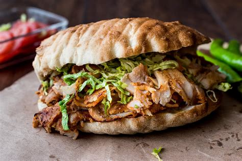

Kebab

Ingredientes
- Carne de cordero
- Lechuga
- Tomate
- Cebolla
- Salsa de yogur
- Pan de pita
Tiempos:
Pasos
- Cocina la carne de cordero en una sartén con aceite caliente.
- Corta el tomate, la cebolla y la lechuga en trozos pequeños.
- Calienta el pan de pita en una plancha o sartén.
- Coloca la carne de cordero y las verduras en el pan de pita caliente.
- Agrega la salsa de yogur.
- Enrolla el pan de pita y sirve caliente.
>